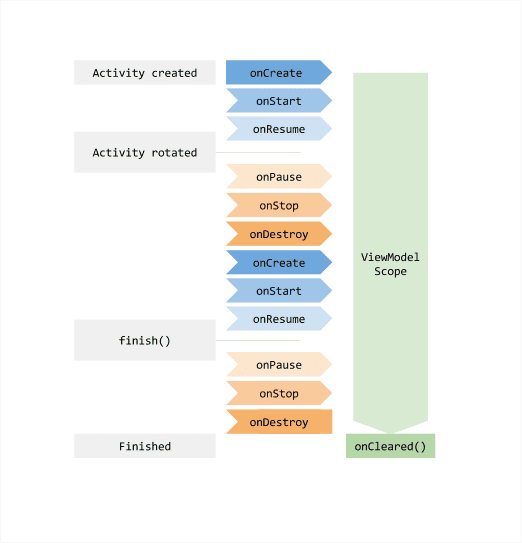

概述 LiveData是一个可观测的数据持有类，不同于通常的被观察者，LiveData具有生命周期感知能力。当它所持有的数据发生改变的时候，并且Lifecycle对象(比如Activity或者Fragment等)处于活跃状态(STARTED或者RESUMED），LiveData将立即通知观察者数据发生了变化。
ViewModel是一种用来存储和管理UI相关数据的类。但不同的是，它支持在系统配置发生改变的时候自动对数据进行保存，需要配合LiveData。此外，它也使得View的数据持有者和UI controller逻辑更加分离，便于解耦和测试。
LiveData&ViewModel的优势：
确保UI和数据状态匹配。当数据发生改变的时候，会自动通知UI进行更新。
避免内存泄漏。Observers是绑定到Lifecycle对象上的，当与其关联的lifecycle被销毁的时候，它们会自动被清理。
避免了由于Activity停止而导致的闪退。当Observer所绑定的Lifecycle处于非活跃状态时，比如处于返回栈中的Activity，它将不会收到任何LiveData事件。
不再需要手动处理生命周期。UI组件只需要对相关的数据进行监听，不需要关心是否应该暂停或者恢复监听。LiveData具有生命周期感知能力，它会自动对这些进行管理。
数据总处于最新状态。如果一个Lifecycle处于非活跃状态，那当它由非活跃状态变为活跃状态的时候，它将收到最新的数据。
系统配置更改时，比如说当Activity或者Fragment由于配置更改而重新创建时（比如旋转屏幕等），它将收到最新的可用数据，需要配合ViewModel使用。这样可以不用通过onSaveInstanceState()方法来进行数据的存储。onSaveInstanceState()方法为了使Activity能够尽快的重建只能存储少量的数据进行恢复，而且在Activity进行重建的时候，会比较浪费资源。但是如果方法在ViewModel中的话，Activity的重建将不会导致获取数据。当然，屏幕的旋转也可以通过configChanges的设置来阻止它的重建，但是其它的有些意外情况Activity也是有可能重建的。
资源共享。我们可以使用单例模式来扩展LiveData，或者结合ViewModel使用，这样就能达到数据变化的时候，通知所有的观察者。
LiveData的作用是在使得数据能具有生命周期感知能力，在Activity等变为活跃状态的时候，自动回调观察者中的回调方法。也就是说对数据的变化进行实时监听。而ViewModel的作用则是，当因系统配置发生改变导致Activity重建的时候（比如旋转屏幕），能对LiveData进行正确的保存和恢复。两者通常结合在一起使用。
LiveData使用 基本使用 为了便于理解LiveData的使用，这里先单独学习一下LiveData的用法。LiveData 的使用分三步：
创建一个LiveData的实例，让它持有一种特定的数据类型，通常是将LiveData放在ViewModel中使用的（这里我们先单独使用）。
创建一个Observer对象，并实现其onChanged方法，在这里定义当LiveData持有的数据发生改变的时候，应该做何操作。可以在这进行UI的更新，一般Observer是在UI controller中创建，比如Activity或者Fragment。
通过创建的LiveData实例的observe方法，将Observer对象添加进LiveData中。
根据这三个步骤，代码如下：
1 2 3 4 5 6 7 8 9 10 11 12 13 14 15 16 17 18 19 20 21 22 23 24 25 public class MainActivity extends AppCompatActivity private static final String TAG = "JetPack" ; private MutableLiveData<Integer> mLiveData; private int value = 0 ; @Override protected void onCreate (@Nullable Bundle savedInstanceState) super .onCreate(savedInstanceState); setContentView(R.layout.activity_main); mLiveData = new MutableLiveData<>(); mLiveData.observe(this , new Observer<Integer>() { @Override public void onChanged (Integer integer) Log.d(TAG, "onChanged: " + integer); } }); Timer timer = new Timer(); timer.schedule(new TimerTask() { @Override public void run () mLiveData.postValue(value++); } }, 0 , 1000 ); } }
当APP进入后台时，计数依旧在进行，但是并不会打印日志，APP重新进入前台后，接着打印数据：
1 2 3 4 5 6 7 8 9 2020 -06 -09 11 :04 :23.618 16442 -16442 /com.hearing.mvvmdemo D/JetPack: onChanged: 0 2020 -06 -09 11 :04 :24.251 16442 -16442 /com.hearing.mvvmdemo D/JetPack: onChanged: 1 2020 -06 -09 11 :04 :25.251 16442 -16442 /com.hearing.mvvmdemo D/JetPack: onChanged: 2 2020 -06 -09 11 :04 :26.256 16442 -16442 /com.hearing.mvvmdemo D/JetPack: onChanged: 3 2020 -06 -09 11 :04 :27.257 16442 -16442 /com.hearing.mvvmdemo D/JetPack: onChanged: 4 2020 -06 -09 11 :04 :28.260 16442 -16442 /com.hearing.mvvmdemo D/JetPack: onChanged: 5 2020 -06 -09 11 :04 :33.510 16442 -16442 /com.hearing.mvvmdemo D/JetPack: onChanged: 10 2020 -06 -09 11 :04 :34.397 16442 -16442 /com.hearing.mvvmdemo D/JetPack: onChanged: 11 2020 -06 -09 11 :04 :35.402 16442 -16442 /com.hearing.mvvmdemo D/JetPack: onChanged: 12
如果想在数据更新的时候让Observer立即得到通知，也就是说忽略生命周期状态，可以使用LiveData的observeForever方法。
LiveData扩展 有时候我们需要在observer的lifecycle处于active状态时做一些操作，那么我们就可以通过继承LiveData或者MutableLiveData，然后覆写其onActive()和onInactive()方法。
LiveData转换 可以通过Transformations类的map操作符将LiveData中存储的数据在分发给Observer之前进行一些修改：
1 2 3 4 5 6 7 8 9 10 11 12 mLiveData = new MutableLiveData<>(); Transformations.map(mLiveData, new Function<Integer, String>() { @Override public String apply (Integer input) return "from " + input; } }).observe(this , new Observer<String>() { @Override public void onChanged (String s) Log.d(TAG, "onChanged: " + s); } });
可以使用Transformations类的switchMap操作符返回一个新的LiveData类型实例：
1 2 3 4 5 6 7 8 9 10 11 12 mLiveData = new MutableLiveData<>(); Transformations.switchMap(mLiveData, new Function<Integer, LiveData<String>>() { @Override public LiveData<String> apply (Integer input) return new MutableLiveData<>("from " + input); } }).observe(this , new Observer<String>() { @Override public void onChanged (String s) Log.d(TAG, "onChanged: " + s); } });
LiveData&ViewModel使用 基本使用 MyViewModel
1 2 3 4 5 6 7 8 9 10 11 12 13 14 15 16 17 18 19 20 21 22 public class MyViewModel extends ViewModel private MutableLiveData<String> mLiveData; private int value; public MutableLiveData<String> getLiveData () if (mLiveData == null ) { mLiveData = new MutableLiveData<>(); scheduleData(); } return mLiveData; } private void scheduleData () Timer timer = new Timer(); timer.schedule(new TimerTask() { @Override public void run () mLiveData.postValue("value " + value++); } }, 0 , 1000 ); } }
MainActivity
1 2 3 4 5 6 7 8 9 10 11 12 13 14 15 16 17 18 public class MainActivity extends AppCompatActivity private static final String TAG = "JetPack" ; @Override protected void onCreate (@Nullable Bundle savedInstanceState) Log.d(TAG, "onCreate" ); super .onCreate(savedInstanceState); setContentView(R.layout.activity_main); MyViewModel viewModel = new ViewModelProvider(this ).get(MyViewModel.class); viewModel.getLiveData().observe(this , new Observer<String>() { @Override public void onChanged (String s) Log.d(TAG, "onChanged: " + s); } }); } }
上面当旋转屏幕时，MainActivity会被重建，onCreate会被重新调用，但是获取到的MyViewModel实例是同一个：
1 2 3 4 5 6 7 8 9 10 11 12 13 14 15 16 2020 -06 -09 11 :40 :55.243 24576 -24576 /com.hearing.mvvmdemo D/JetPack: onCreate2020 -06 -09 11 :40 :55.534 24576 -24576 /com.hearing.mvvmdemo D/JetPack: onChanged: value 0 2020 -06 -09 11 :40 :56.387 24576 -24576 /com.hearing.mvvmdemo D/JetPack: onChanged: value 1 2020 -06 -09 11 :40 :57.386 24576 -24576 /com.hearing.mvvmdemo D/JetPack: onChanged: value 2 2020 -06 -09 11 :40 :58.389 24576 -24576 /com.hearing.mvvmdemo D/JetPack: onChanged: value 3 2020 -06 -09 11 :40 :59.387 24576 -24576 /com.hearing.mvvmdemo D/JetPack: onChanged: value 4 2020 -06 -09 11 :41 :00 .387 24576 -24576 /com.hearing.mvvmdemo D/JetPack: onChanged: value 5 2020 -06 -09 11 :41 :01 .388 24576 -24576 /com.hearing.mvvmdemo D/JetPack: onChanged: value 6 2020 -06 -09 11 :41 :02 .387 24576 -24576 /com.hearing.mvvmdemo D/JetPack: onChanged: value 7 2020 -06 -09 11 :41 :02 .605 24576 -24576 /com.hearing.mvvmdemo D/JetPack: onCreate2020 -06 -09 11 :41 :02 .703 24576 -24576 /com.hearing.mvvmdemo D/JetPack: onChanged: value 7 2020 -06 -09 11 :41 :03 .390 24576 -24576 /com.hearing.mvvmdemo D/JetPack: onChanged: value 8 2020 -06 -09 11 :41 :04 .390 24576 -24576 /com.hearing.mvvmdemo D/JetPack: onChanged: value 9 2020 -06 -09 11 :41 :05 .390 24576 -24576 /com.hearing.mvvmdemo D/JetPack: onChanged: value 10 2020 -06 -09 11 :41 :06 .390 24576 -24576 /com.hearing.mvvmdemo D/JetPack: onChanged: value 11 2020 -06 -09 11 :41 :07 .391 24576 -24576 /com.hearing.mvvmdemo D/JetPack: onChanged: value 12
数据共享 可以使用ViewModel结合LivaData实现数据共享，如在Fragment之间可以通过这种方式共享数据。
ViewModel
1 2 3 4 5 6 7 8 9 10 11 public class SharedViewModel extends ViewModel private final MutableLiveData<String> selected = new MutableLiveData<>(); public void select (String item) selected.setValue(item); } public LiveData<String> getSelected () return selected; } }
Fragment
1 2 3 4 5 6 7 8 9 10 11 12 13 14 15 16 17 18 19 20 21 22 23 24 25 26 27 28 29 30 31 32 33 34 35 36 37 public class MasterFragment extends Fragment private int value; @Override public void onCreate (@Nullable Bundle savedInstanceState) super .onCreate(savedInstanceState); final SharedViewModel viewModel = new ViewModelProvider(getActivity()).get(SharedViewModel.class); Timer timer = new Timer(); timer.schedule(new TimerTask() { @Override public void run () getActivity().runOnUiThread(new Runnable() { @Override public void run () viewModel.select("master " + value++); } }); } }, 0 , 1000 ); } } public class DetailFragment extends Fragment private static final String TAG = "JetPack" ; @Override public void onCreate (@Nullable Bundle savedInstanceState) super .onCreate(savedInstanceState); final SharedViewModel viewModel = new ViewModelProvider(getActivity()).get(SharedViewModel.class); viewModel.getSelected().observe(getActivity(), new Observer<String>() { @Override public void onChanged (String s) Log.d(TAG, "onChanged: " + s); } }); } }
LiveData源码分析 MutableLiveData MutableLiveData源码如下：
1 2 3 4 5 6 7 8 9 10 11 12 13 14 15 16 17 18 19 public class MutableLiveData <T > extends LiveData <T > public MutableLiveData (T value) super (value); } public MutableLiveData () super (); } @Override public void postValue (T value) super .postValue(value); } @Override public void setValue (T value) super .setValue(value); } }
可以看出MutableLiveData本身没有逻辑，它只是暴露了几个接口，其实现方法都在父类LiveData中。
LiveData初始化 1 2 3 4 5 6 7 8 9 10 11 12 13 14 15 16 17 public abstract class LiveData <T > private volatile Object mData; private int mVersion; static final int START_VERSION = -1 ; static final Object NOT_SET = new Object(); int mActiveCount = 0 ; public LiveData (T value) mData = value; mVersion = START_VERSION + 1 ; } public LiveData () mData = NOT_SET; mVersion = START_VERSION; } }
ObserverWrapper 在介绍下面的源码之前，先看一看ObserverWrapper及其子类的逻辑：
1 2 3 4 5 6 7 8 9 10 11 12 13 14 15 16 17 18 19 20 21 22 23 24 25 26 27 28 29 30 31 32 33 34 35 36 37 38 39 private abstract class ObserverWrapper final Observer<? super T> mObserver; boolean mActive; int mLastVersion = START_VERSION; ObserverWrapper(Observer<? super T> observer) { mObserver = observer; } abstract boolean shouldBeActive () boolean isAttachedTo (LifecycleOwner owner) return false ; } void detachObserver () } void activeStateChanged (boolean newActive) if (newActive == mActive) { return ; } mActive = newActive; boolean wasInactive = LiveData.this .mActiveCount == 0 ; LiveData.this .mActiveCount += mActive ? 1 : -1 ; if (wasInactive && mActive) { onActive(); } if (LiveData.this .mActiveCount == 0 && !mActive) { onInactive(); } if (mActive) { dispatchingValue(this ); } } }
其子类有两个：
AlwaysActiveObserver：对应LiveData#observeForever方法，观察者忽略生命周期状态，状态一变更就会收到notify；
LifecycleBoundObserver：对应LiveData#observe方法，观察者受控制于LifecycleOwner的生命周期；
源码如下：
1 2 3 4 5 6 7 8 9 10 11 12 13 14 15 16 17 18 19 20 21 22 23 24 25 26 27 28 29 30 31 32 33 34 35 36 37 38 39 40 41 42 43 44 45 46 private class AlwaysActiveObserver extends ObserverWrapper AlwaysActiveObserver(Observer<? super T> observer) { super (observer); } @Override boolean shouldBeActive () return true ; } } class LifecycleBoundObserver extends ObserverWrapper implements LifecycleEventObserver @NonNull final LifecycleOwner mOwner; LifecycleBoundObserver(@NonNull LifecycleOwner owner, Observer<? super T> observer) { super (observer); mOwner = owner; } @Override boolean shouldBeActive () return mOwner.getLifecycle().getCurrentState().isAtLeast(STARTED); } @Override public void onStateChanged (@NonNull LifecycleOwner source, @NonNull Lifecycle.Event event) if (mOwner.getLifecycle().getCurrentState() == DESTROYED) { removeObserver(mObserver); return ; } activeStateChanged(shouldBeActive()); } @Override boolean isAttachedTo (LifecycleOwner owner) return mOwner == owner; } @Override void detachObserver () mOwner.getLifecycle().removeObserver(this ); } }
observe 1 2 3 4 5 6 7 8 9 10 11 12 13 14 15 16 17 18 @MainThread public void observe (@NonNull LifecycleOwner owner, @NonNull Observer<? super T> observer) assertMainThread("observe" ); if (owner.getLifecycle().getCurrentState() == DESTROYED) { return ; } LifecycleBoundObserver wrapper = new LifecycleBoundObserver(owner, observer); ObserverWrapper existing = mObservers.putIfAbsent(observer, wrapper); if (existing != null && !existing.isAttachedTo(owner)) { throw new IllegalArgumentException("Cannot add the same observer with different lifecycles" ); } if (existing != null ) { return ; } owner.getLifecycle().addObserver(wrapper); }
可知observe方法中使用的是LifecycleBoundObserver，并将其添加到了owner的Lifecycle的观察者集合中。这样当owner的state一变化，则会调用LifecycleBoundObserver的onStateChanged方法，如果owner未处于DESTROYED，则调用父类ObserverWrapper的activeStateChanged方法。
observeForever 1 2 3 4 5 6 7 8 9 10 11 12 13 14 @MainThread public void observeForever (@NonNull Observer<? super T> observer) assertMainThread("observeForever" ); AlwaysActiveObserver wrapper = new AlwaysActiveObserver(observer); ObserverWrapper existing = mObservers.putIfAbsent(observer, wrapper); if (existing instanceof LiveData.LifecycleBoundObserver) { throw new IllegalArgumentException("Cannot add the same observer with different lifecycles" ); } if (existing != null ) { return ; } wrapper.activeStateChanged(true ); }
observeForever方法中使用的是AlwaysActiveObserver，且直接调用到父类ObserverWrapper的activeStateChanged方法。需要注意的是需要手动调用removeObserver方法移除观察者。
removeObserver(s) 1 2 3 4 5 6 7 8 9 10 11 12 13 14 15 16 17 18 19 20 21 @MainThread public void removeObserver (@NonNull final Observer<? super T> observer) assertMainThread("removeObserver" ); ObserverWrapper removed = mObservers.remove(observer); if (removed == null ) { return ; } removed.detachObserver(); removed.activeStateChanged(false ); } @MainThread public void removeObservers (@NonNull final LifecycleOwner owner) assertMainThread("removeObservers" ); for (Map.Entry<Observer<? super T>, ObserverWrapper> entry : mObservers) { if (entry.getValue().isAttachedTo(owner)) { removeObserver(entry.getKey()); } } }
postValue/setValue 1 2 3 4 5 6 7 8 9 10 11 12 13 14 15 16 17 18 19 20 21 22 23 24 25 26 27 28 29 30 31 32 33 34 35 36 volatile Object mPendingData = NOT_SET;private final Runnable mPostValueRunnable = new Runnable() { @SuppressWarnings("unchecked") @Override public void run () Object newValue; synchronized (mDataLock) { newValue = mPendingData; mPendingData = NOT_SET; } setValue((T) newValue); } }; protected void postValue (T value) boolean postTask; synchronized (mDataLock) { postTask = mPendingData == NOT_SET; mPendingData = value; } if (!postTask) { return ; } ArchTaskExecutor.getInstance().postToMainThread(mPostValueRunnable); } @MainThread protected void setValue (T value) assertMainThread("setValue" ); mVersion++; mData = value; dispatchingValue(null ); }
dispatchingValue 1 2 3 4 5 6 7 8 9 10 11 12 13 14 15 16 17 18 19 20 21 22 23 24 25 26 27 28 29 30 31 32 33 34 35 36 37 38 39 40 41 42 43 44 private boolean mDispatchingValue;private boolean mDispatchInvalidated;void dispatchingValue (@Nullable ObserverWrapper initiator) if (mDispatchingValue) { mDispatchInvalidated = true ; return ; } mDispatchingValue = true ; do { mDispatchInvalidated = false ; if (initiator != null ) { considerNotify(initiator); initiator = null ; } else { for (Iterator<Map.Entry<Observer<? super T>, ObserverWrapper>> iterator = mObservers.iteratorWithAdditions(); iterator.hasNext(); ) { considerNotify(iterator.next().getValue()); if (mDispatchInvalidated) { break ; } } } } while (mDispatchInvalidated); mDispatchingValue = false ; } private void considerNotify (ObserverWrapper observer) if (!observer.mActive) { return ; } if (!observer.shouldBeActive()) { observer.activeStateChanged(false ); return ; } if (observer.mLastVersion >= mVersion) { return ; } observer.mLastVersion = mVersion; observer.mObserver.onChanged((T) mData); }
Transformations可以对给定的LiveData做一些转换，常用的有map和switchMap操作符，类似于RxJava用法。
1 2 3 4 5 6 7 8 9 10 11 12 13 14 15 16 17 18 19 20 21 22 23 24 25 26 27 28 29 30 31 32 33 34 35 36 37 38 39 40 41 42 43 44 45 46 @MainThread @NonNull public static <X, Y> LiveData<Y> map ( @NonNull LiveData<X> source, @NonNull final Function<X, Y> mapFunction) final MediatorLiveData<Y> result = new MediatorLiveData<>(); result.addSource(source, new Observer<X>() { @Override public void onChanged (@Nullable X x) result.setValue(mapFunction.apply(x)); } }); return result; } @MainThread @NonNull public static <X, Y> LiveData<Y> switchMap ( @NonNull LiveData<X> source, @NonNull final Function<X, LiveData<Y>> switchMapFunction) final MediatorLiveData<Y> result = new MediatorLiveData<>(); result.addSource(source, new Observer<X>() { LiveData<Y> mSource; @Override public void onChanged (@Nullable X x) LiveData<Y> newLiveData = switchMapFunction.apply(x); if (mSource == newLiveData) { return ; } if (mSource != null ) { result.removeSource(mSource); } mSource = newLiveData; if (mSource != null ) { result.addSource(mSource, new Observer<Y>() { @Override public void onChanged (@Nullable Y y) result.setValue(y); } }); } } }); return result; }
其原理都是使用了MediatorLiveData类。
MediatorLiveData也是LiveData的子类，它是一个Mediator（中间人）：
1 2 3 4 5 6 7 8 9 10 11 12 13 14 15 16 17 18 19 20 21 22 23 24 25 26 27 28 29 30 31 32 33 34 35 36 37 38 39 40 41 42 43 44 45 46 47 48 49 50 51 52 53 54 55 56 57 58 59 60 61 62 63 64 65 66 67 68 69 public class MediatorLiveData <T > extends MutableLiveData <T > private SafeIterableMap<LiveData<?>, Source<?>> mSources = new SafeIterableMap<>(); @MainThread public <S> void addSource (@NonNull LiveData<S> source, @NonNull Observer<? super S> onChanged) Source<S> e = new Source<>(source, onChanged); Source<?> existing = mSources.putIfAbsent(source, e); if (existing != null && existing.mObserver != onChanged) { throw new IllegalArgumentException("This source was already added with the different observer" ); } if (existing != null ) { return ; } if (hasActiveObservers()) { e.plug(); } } @MainThread public <S> void removeSource (@NonNull LiveData<S> toRemote) Source<?> source = mSources.remove(toRemote); if (source != null ) { source.unplug(); } } @CallSuper @Override protected void onActive () for (Map.Entry<LiveData<?>, Source<?>> source : mSources) { source.getValue().plug(); } } @CallSuper @Override protected void onInactive () for (Map.Entry<LiveData<?>, Source<?>> source : mSources) { source.getValue().unplug(); } } private static class Source <V > implements Observer <V > final LiveData<V> mLiveData; final Observer<? super V> mObserver; int mVersion = START_VERSION; Source(LiveData<V> liveData, final Observer<? super V> observer) { mLiveData = liveData; mObserver = observer; } void plug () mLiveData.observeForever(this ); } void unplug () mLiveData.removeObserver(this ); } @Override public void onChanged (@Nullable V v) if (mVersion != mLiveData.getVersion()) { mVersion = mLiveData.getVersion(); mObserver.onChanged(v); } } } }
总结 LiveData之所以具有生命周期感知，其实也是借用了Lifecycle的功能，其源码相对而言也不算很复杂。
ViewModel源码分析 生命周期 ViewModel对象存在的时间范围是获取ViewModel时传递给ViewModelProvider的Lifecycle。ViewModel将一直留在内存中，直到其对应的Lifecycle永久消失：对于Activity，是在Activity Finished时；而对于Fragment，是在Fragment Detached时。
下图说明了Activity经历屏幕旋转而后结束的过程中所处的各种生命周期状态：

ViewModelStore 顾名思义，ViewModelStore是一个用来存储ViewModel的类，源码如下：
1 2 3 4 5 6 7 8 9 10 11 12 13 14 15 16 17 18 19 20 21 22 23 24 25 26 public class ViewModelStore private final HashMap<String, ViewModel> mMap = new HashMap<>(); final void put (String key, ViewModel viewModel) ViewModel oldViewModel = mMap.put(key, viewModel); if (oldViewModel != null ) { oldViewModel.onCleared(); } } final ViewModel get (String key) return mMap.get(key); } Set<String> keys () { return new HashSet<>(mMap.keySet()); } public final void clear () for (ViewModel vm : mMap.values()) { vm.clear(); } mMap.clear(); } }
ViewModelProvider 初始化 ViewModelProvider的初始化需要指定两个参数：
Factory：生产ViewModel实例的工厂
ViewModelStore：存储ViewModel实例的类
1 2 3 4 5 6 7 8 9 10 11 12 13 14 15 16 17 18 19 20 21 22 23 24 public class ViewModelProvider private final Factory mFactory; private final ViewModelStore mViewModelStore; public ViewModelProvider (@NonNull ViewModelStoreOwner owner) this (owner.getViewModelStore(), owner instanceof HasDefaultViewModelProviderFactory ? ((HasDefaultViewModelProviderFactory) owner).getDefaultViewModelProviderFactory() : NewInstanceFactory.getInstance()); } public ViewModelProvider (@NonNull ViewModelStoreOwner owner, @NonNull Factory factory) this (owner.getViewModelStore(), factory); } public ViewModelProvider (@NonNull ViewModelStore store, @NonNull Factory factory) mFactory = factory; mViewModelStore = store; } } public interface HasDefaultViewModelProviderFactory @NonNull ViewModelProvider.Factory getDefaultViewModelProviderFactory () ; }
Factory Factory是一个生产ViewModel的工厂，通过实现这个接口可以自定义工厂：
1 2 3 4 public interface Factory @NonNull <T extends ViewModel> T create (@NonNull Class<T> modelClass) ; }
NewInstanceFactory
直接通过 modelClass.newInstance() 创建 ViewModel 实例。
AndroidViewModelFactory
创建 AndroidViewModel 实例。在ViewModel中最好不要持有Activity的引用，因为当Activity被reCreate时，ViewModel对象并没有被销毁，如果Model持有Activity的引用时就可能会导致内存泄漏。如果要使用到Context对象则可以使用ViewModel的子类AndroidViewModel：
1 2 3 4 5 6 7 8 9 10 11 12 public class AndroidViewModel extends ViewModel private Application mApplication; public AndroidViewModel (@NonNull Application application) mApplication = application; } @NonNull public <T extends Application> T getApplication () { return (T) mApplication; } }
get方法 get方法获取一个ViewModel实例：
1 2 3 4 5 6 7 8 9 10 11 12 13 14 15 16 17 18 19 20 21 22 23 24 25 26 27 28 29 30 31 32 33 34 35 private static final String DEFAULT_KEY = "androidx.lifecycle.ViewModelProvider.DefaultKey" ;@NonNull @MainThread public <T extends ViewModel> T get (@NonNull Class<T> modelClass) { String canonicalName = modelClass.getCanonicalName(); if (canonicalName == null ) { throw new IllegalArgumentException("Local and anonymous classes can not be ViewModels" ); } return get(DEFAULT_KEY + ":" + canonicalName, modelClass); } @NonNull @MainThread public <T extends ViewModel> T get (@NonNull String key, @NonNull Class<T> modelClass) { ViewModel viewModel = mViewModelStore.get(key); if (modelClass.isInstance(viewModel)) { if (mFactory instanceof OnRequeryFactory) { ((OnRequeryFactory) mFactory).onRequery(viewModel); } return (T) viewModel; } else { if (viewModel != null ) { } } if (mFactory instanceof KeyedFactory) { viewModel = ((KeyedFactory) (mFactory)).create(key, modelClass); } else { viewModel = (mFactory).create(modelClass); } mViewModelStore.put(key, viewModel); return (T) viewModel; }
ViewModel数据保存 当 Activity 因旋转发生改变时，系统会重新创建一个新的 Activity 实例，那旧 Activity 中的 ViewModel 是如何传递给新的 Activity 的呢？首先了解一下数据恢复的几种常见方式：
onSaveInstanceState 与 onRestoreInstanceState
当 Activity 开始停止时，系统会调用 onSaveInstanceState() 方法将状态信息保存到 Bundle 中。重建先前被销毁的 Activity 后，可以从系统传递给 Activity 的 Bundle 中恢复保存的实例状态。onCreate() 和 onRestoreInstanceState() 回调方法均会收到包含实例状态信息的相同 Bundle。
Fragment.setRetainInstance
当配置发生改变时，Fragment 会随着宿主 Activity 销毁与重建。在调用 Fragment.setRetainInstance(true) 方法时，系统允许 Fragment 绕开销毁-重建的过程：
使用该方法后，不会调用 Fragment 的 onDestory() 方法，但仍然会调用 onDetach() 方法。
使用该方法后，不会调用 Fragment 的 onCreate(Bundle) 方法。
使用该方法后，Fragment 的 onAttach(Activity) 与 onActivityCreated(Bundle) 方法仍然会被调用。
onRetainNonConfigurationInstance 与 getLastNonConfigurationInstance
在 Activity 中提供了 onRetainNonConfigurationInstance 方法用于处理配置发生改变时数据的保存。随后在重新创建的 Activity 中调用 getLastNonConfigurationInstance 获取上次保存的数据。我们不能直接重写上述方法，如果想在 Activity 中自定义想要恢复的数据，需要调用上述两个方法的内部方法: onRetainCustomNonConfigurationInstance(), getLastCustomNonConfigurationInstance().
几种数据恢复方式的总结
ViewModel的恢复
Google 在 Androidx 版本的 Activity 源码中重写了 onRetainNonConfigurationInstance 逻辑：
1 2 3 4 5 6 7 8 9 10 11 12 13 14 15 16 17 18 19 20 21 22 23 24 25 26 27 28 29 30 31 32 33 34 35 36 37 public final Object onRetainNonConfigurationInstance () Object custom = onRetainCustomNonConfigurationInstance(); ViewModelStore viewModelStore = mViewModelStore; if (viewModelStore == null ) { NonConfigurationInstances nc = (NonConfigurationInstances) getLastNonConfigurationInstance(); if (nc != null ) { viewModelStore = nc.viewModelStore; } } if (viewModelStore == null && custom == null ) { return null ; } NonConfigurationInstances nci = new NonConfigurationInstances(); nci.custom = custom; nci.viewModelStore = viewModelStore; return nci; } public final Object onRetainNonConfigurationInstance () Object custom = onRetainCustomNonConfigurationInstance(); FragmentManagerNonConfig fragments = mFragments.retainNestedNonConfig(); if (fragments == null && mViewModelStore == null && custom == null ) { return null ; } NonConfigurationInstances nci = new NonConfigurationInstances(); nci.custom = custom; nci.viewModelStore = mViewModelStore; nci.fragments = fragments; return nci; }
然后当新的 Activity 重新创建并调用 ViewModelProviders.of(this).get(xxxModel.class) 时又会在 getViewModelStore() 方法中获取老 Activity 保存的 ViewModelStore：
1 2 3 4 5 6 7 8 9 10 11 12 13 14 15 16 17 public ViewModelStore getViewModelStore () if (getApplication() == null ) { throw new IllegalStateException("..." ); } if (mViewModelStore == null ) { NonConfigurationInstances nc = (NonConfigurationInstances) getLastNonConfigurationInstance(); if (nc != null ) { mViewModelStore = nc.viewModelStore; } if (mViewModelStore == null ) { mViewModelStore = new ViewModelStore(); } } return mViewModelStore; }
因此在屏幕旋转后，ViewModel 保存的数据可以被恢复。
另外 ViewModel 在 Fragment 中不会因配置改变而销毁的原因其实是因为其声明的 ViewModel 是存储在 FragmentManagerViewModel 中的，而 FragmentManagerViewModel 是存储在宿主 Activity 中的 ViewModelStore 中，又因 Activity 中 ViewModelStore不会因配置改变而销毁，故 Fragment 中 ViewModel 也不会因配置改变而销毁。
1 2 3 4 5 6 7 public ViewModelStore getViewModelStore () if (mFragmentManager == null ) { throw new IllegalStateException("Can't access ViewModels from detached fragment" ); } return mFragmentManager.getViewModelStore(this ); }
ViewModel能在Fragment中共享的原理
假如想在 FragmentB 获取 FragmentA 中的数据，那么只有在 Activity 中的 ViewModelStore 下添加 ViewModel 才能在不同 Fragment 中获取相同的数据。这也是为什么在 Fragment 中使用共享的 ViewModel 时，我们要在调用 ViewModelProvider.of() 创建 ViewModel 时传入 getActivity() 的原因。
总结 ViewModel之所以比Activity/Fragment生命周期长，是因为在ViewModelStore中存储了其实例，当重建后获取的ViewModel实例是之前已经存储了的实例，只有当Activity Finished或者Fragment Detached时才会被销毁，可以参考下面的代码：
1 2 3 4 5 6 7 8 9 10 11 12 13 14 15 16 public class ComponentActivity extends androidx .core .app .ComponentActivity implements LifecycleOwner , ViewModelStoreOwner , ... { public ComponentActivity () getLifecycle().addObserver(new LifecycleEventObserver() { @Override public void onStateChanged (@NonNull LifecycleOwner source, @NonNull Lifecycle.Event event) if (event == Lifecycle.Event.ON_DESTROY) { if (!isChangingConfigurations()) { getViewModelStore().clear(); } } } }); } }
Fragment中也可以找到类似逻辑的代码。
总结 通常LiveData是需要配合ViewModel使用的。ViewModel负责在系统配置更改时保存LiveData，而LiveData则负责在生命周期状态发生改变的时候，对数据的变化进行监听。